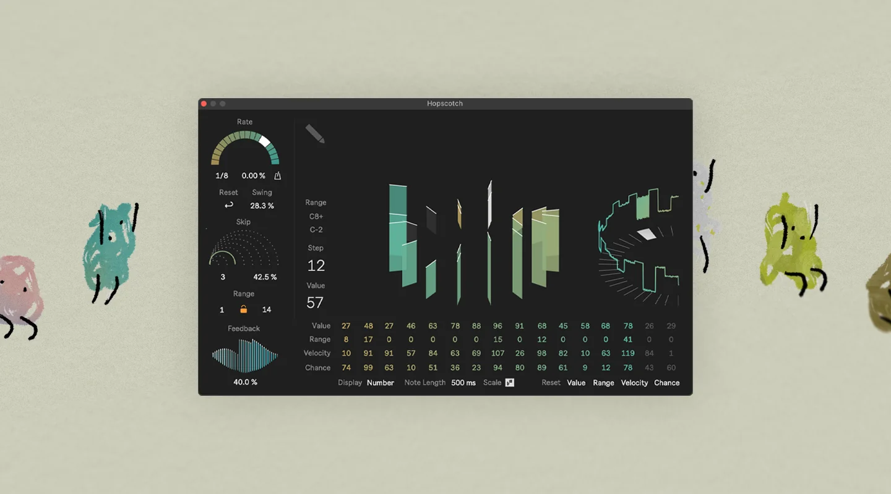
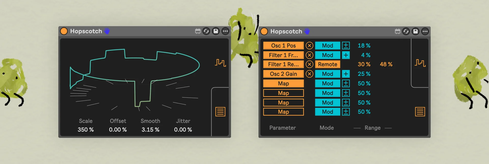
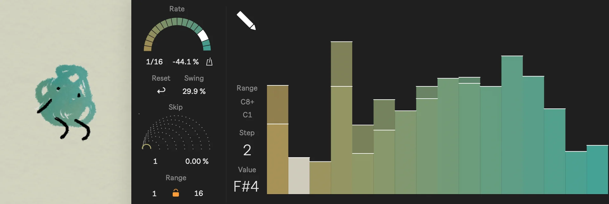

Hopscotch is a step sequencer and modulator Max for Live device.
Sequencers can do many things, a walking through pattern repetition and variation.
Hopscotch is jumping over dry chalk over asphalt — its architecture borrows from modular feedback techniques and no
input mixing for a a sequencer that drifts in and out, skips predictably at unpredictable intervals, and ricochets
violently on occasion.
Playing gentle or not, Hopscotch is a sequencer that pushes form forward — playing itself out into the unfamiliar in a
one-legged wobble, trying not to scrape its knees.

The design of Hopscotches modulation system is in lockstep with Abletons modulation system. The control signals can be used to modulate or override the mapped parameter.

Hopscotch's editor provides an easy click-and-drag editor for a range of values, meaning that repetition of the sequences can be exact or all kinds of varied. Alongside velocity and chance, Hopscotch makes it easy to stray out of the musically familiar.
Hopscotch has all kinds of little feedback mechanisms built in, and it’s what makes Hopscotch what it is. You can use it
to make different controls hold hands, or to make it grip knuckles white kind of hard.
Feedback to the rate makes for musical drifting away from tempo. Feedback to the skip makes for some predictable
stepping, some unpredictable skipping.
At its most extreme, the main feedback dial offsets the step sequencer position, which means violent ricocheting,
stuttered MIDI notes, and near-audio-rate control signal. The kind you get when you do no-input mixing — stable signal,
followed by some freaking out.
Minimum Requirements:
Ableton Live 10, 11 & 12 Suite or Standard with Max for Live installed.